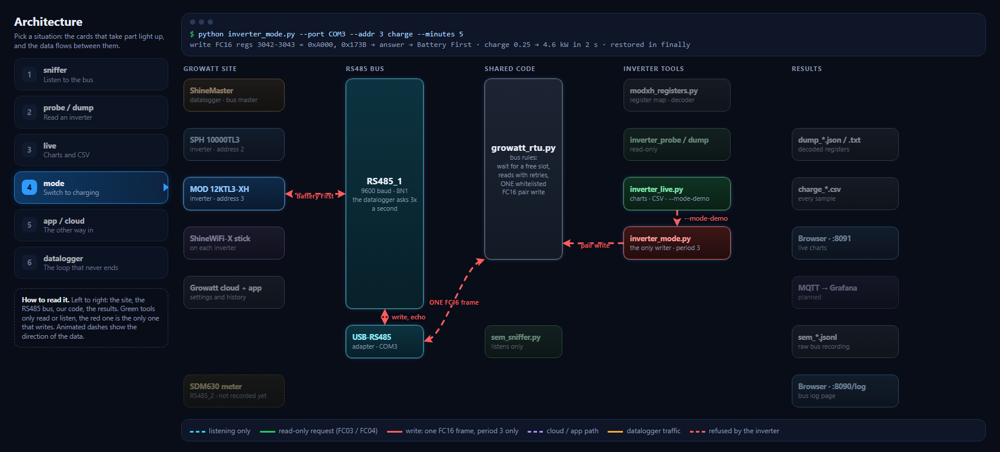
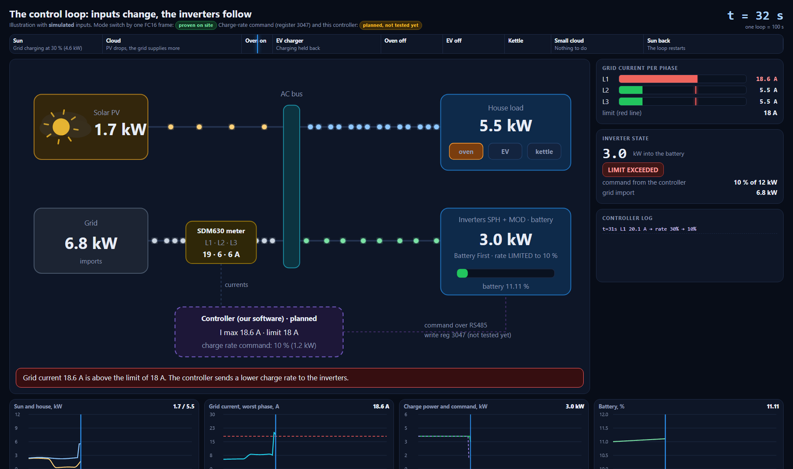
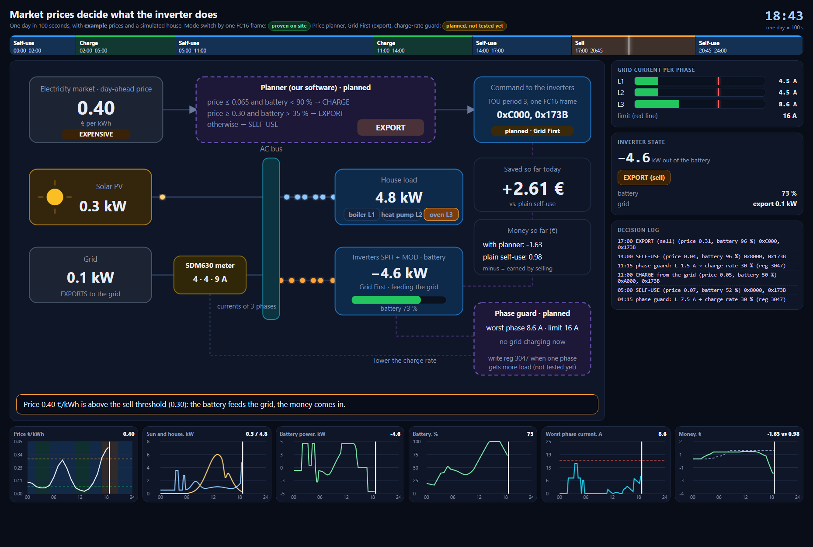
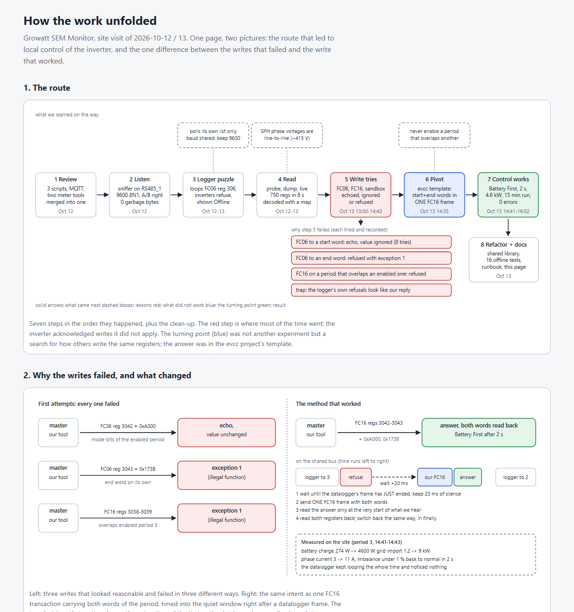

Growatt SEM Monitor: interactive demos
Four self-contained pages from a project that reads a Growatt SEM-E site over RS485 / Modbus RTU and switches the charge mode of the inverters locally. Click a card; each page opens on its own and works offline. In the two animations you can drag the mouse along the bar at the top to move in time.

Architecture and data flow
The site, the RS485 bus, the shared code and the tools as coloured cards. Pick one of six situations and the cards that take part light up, with animated arrows showing which way the data goes.
based on a real site
The control loop (100 s)
Sun and house load change, the current of one phase crosses the limit, the controller sends a lower charge rate and the inverters follow. Made for screen recording.
simulated inputs
Market prices and the inverter
One day in 100 seconds: charge from the grid when the price is low, sell from the battery when it is high, and cut the charge rate when one phase gets more load.
example prices, simulated house
How the work unfolded
The route from the first look at the bus to switching the mode over RS485 in two seconds, with the dead ends, and the difference between the writes that failed and the one that worked.
from the real experimentsdocs/experiments.md point to the
project's private repository. The arrows of the architecture page are drawn by
LeaderLine (MIT licence, © anseki), embedded in that page.